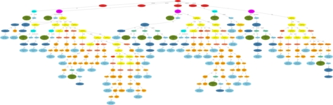

Olmar : Process C++ Programs in Ocaml |
 The ocaml garbage collector (byterun/minor_gc.c) |
For simplicity I only distribute a complete smbase/Ast/Elkhound/Elsa/Olmar system now. If you want to have pure Elsa, please download it from Elsa website.
(It appears to run on a 64bit system. However, there are quite a few warning about casts between pointer and integer. I guess it is pure luck that it passes the regression tests.)
cvs -d :pserver:anon@cvs-srv.cs.kun.nl:/robin co elsa
Leave out the -no-dash-O2 option if you want to compile the C++ code with -O2. You can use the environment variables CC and CXX to set the C and C++ compiler, respectively.configure -no-dash-O2
The whole thing consists of five packages/sudirectories: smbase, ast, elkhound, elsa, and asttools. The configure script and the makefile of the base directory simply start the appropriate action in each subdirectory. configure --help in the base directory will therefore give you the help text of all the configure scripts in the subdirectories.
this will create the C++ parser elsa/ccparse, the AST Graph utility asttools/ast_graph, and the Olmar example application asttool/count-ast.make
g++ -E -o crc.ii smbase/crc.cpp
elsa/ccparse -oc crc.oast crc.ii
asttools/ast_graph -o crc.dot crc.oast
zgrviewer crc.dot dotty crc.dot dot -Tps crc.dot -o crc.ps; gv crc.ps
Elsa can output its internal abstract syntax tree in XML, or (mainly for debugging purposes) in plain ASCII. In principle one could read the XML into Ocaml, for instance with PXP. PXP reads XML into an Ocaml object hierarchy. As far as I know, there is, however, no simple way to translate XML into an Ocaml variant type. With PXP one could either write a pull parser or a visitor on the ocaml object tree. Both approaches are a kind of high-level XML parsing that require some form of typechecking the XML and a lot of error code. I did not want to write this kind of XML typechecking code. Therefore Olmar uses a completely different approach.
Olmar simply adds a method toOcaml to each class in Elsa's abstract syntax tree. This method traverses the syntax tree, thereby reconstructing it in Ocaml. At the end the Ocaml value is marshaled into a file. Elsa is linked with some Ocaml code, the ocaml runtime and some C++ glue code. (In reality the whole story is slightly more complicated, because Elsa's ast can be circular and because C++ pointers might be NULL. Anyway ...)
Elsa internal abstract syntax tree falls into two parts. About 35 different node types (about 150 classes) describe the C++ syntax. Elsa's type checker adds some more types of nodes to describe C++ types in a syntax independent way. A node type might be split into several subtypes (very similar to Ocaml variants). The node type for C++ expressions, for instance, is modelled with 36 classes, for each kind of expression one. In Ocaml such node types are of course modelled with a variant type. Elsa's abstract syntax tree contains also unstructured node types (i.e., without subtypes). In Ocaml those nodes are represented as a tuple or a record.
I wanted to keep Olmar mostly independent from the encoding of variant constructors in Ocaml. Therefore, I register an Ocaml callback function for each variant constructor and each tuple type. The C++ code calls these callbacks in order to construct Ocaml values (instead of allocating memory itself and filling it). Only list and option values are created directly in C++. For now I prefer this hopefully less error prone variant over more efficient code.
The code for the 35 syntax node types is generated automatically from an ast description file. Therefore, to add the toOcaml method to these syntax classes one only needs to patch astgen. With Olmar astgen additionally generates an Ocaml type definition and Ocaml code for the abovementioned callback functions. Finally astgen also generates the toOcaml method in C++.
The syntax tree nodes for Elsa's typechecker are, unfortunately, not generated from ast descriptions. I had to write all the necessary Ocaml and C++ code myself. In the end this turned out to be much more work than improving astgen...
For instance
{kind=link}